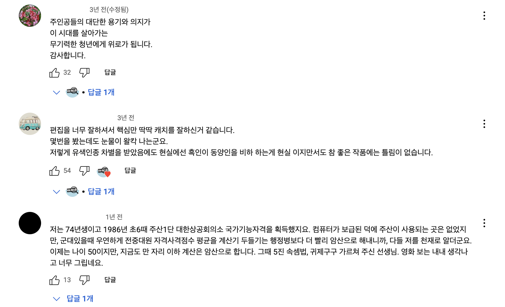
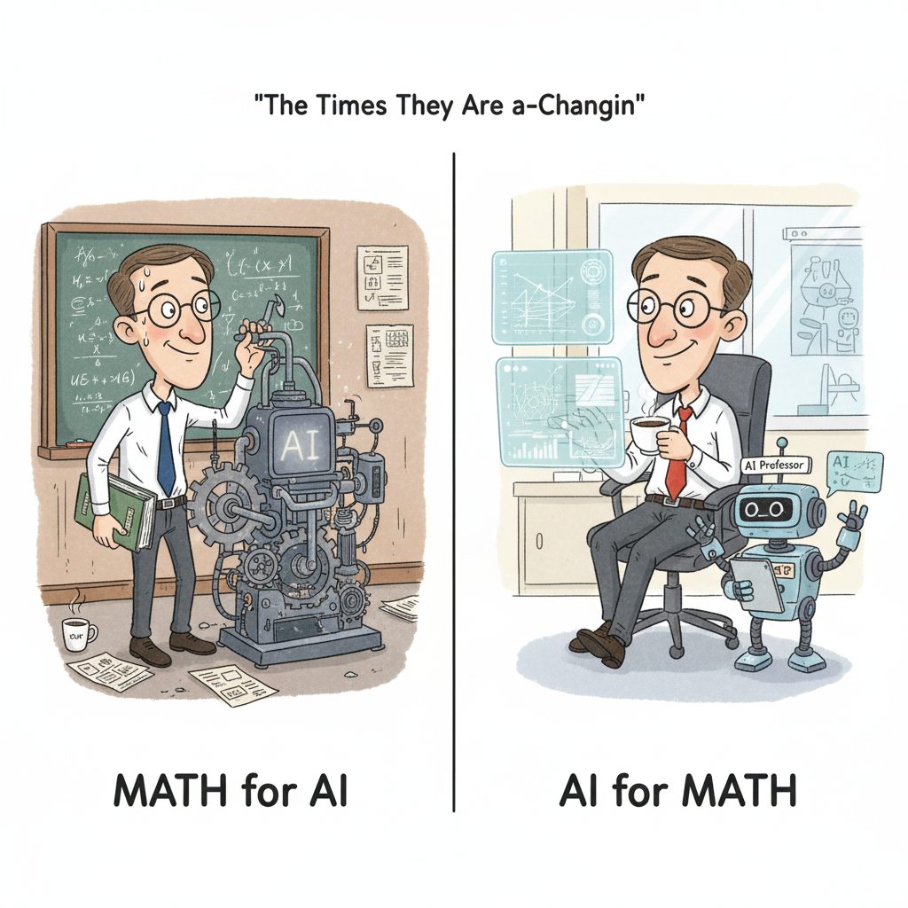
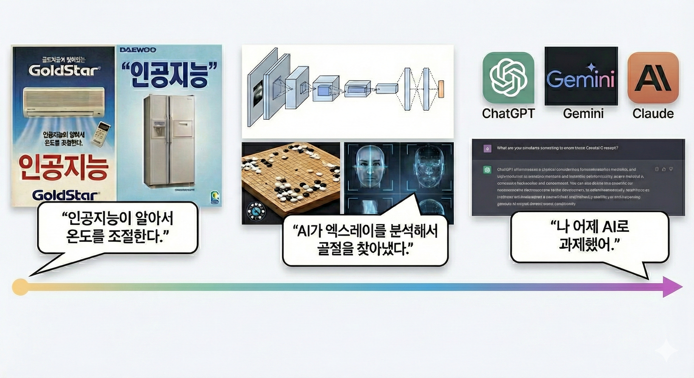
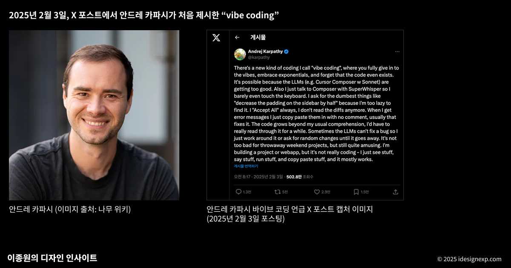
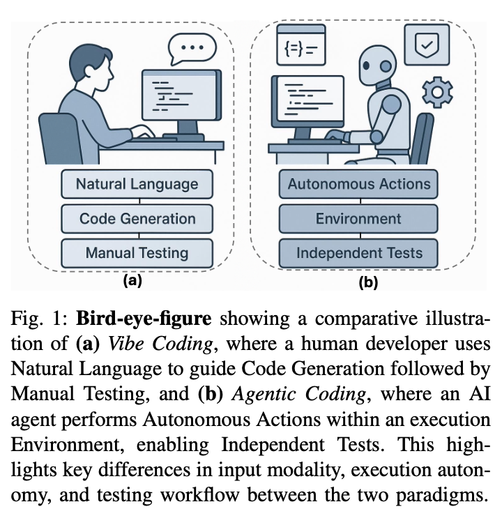
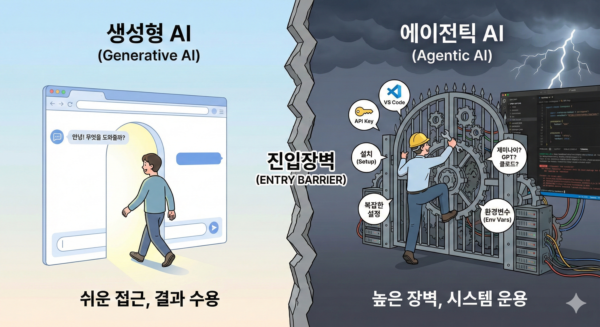
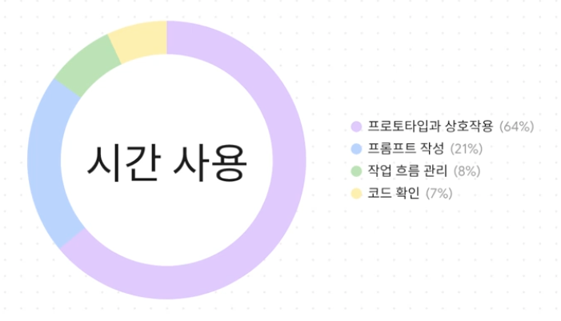

에이전틱 AI를 이용한 파이썬 실무
농촌진흥청 신규연구사 교육과정 · 생성형 AI 이용 파이썬 실무·실습
전북대학교 통계학과
2026-10-02
강사소개
최규빈 | 전북대학교 통계학과
- Email: guebin@jbnu.ac.kr
- Phone: (+82) 63-270-3387
- YouTube: https://www.youtube.com/channel/UCQk9RyBNgXc7ORIsYlOfQrg
학습목표
이 강의를 마치면 다음을 할 수 있습니다.
- 생성형 AI와 에이전틱 AI의 차이를 “묻기”와 “시키기”로 설명할 수 있다.
- RAG, 바이브코딩, MCP, 에이전틱 코딩의 뜻을 실제 도구(ChatGPT, Claude Code, Gemini CLI)와 연결해 말할 수 있다.
- 무료 도구(Colab, Gemini)로 파일 정리·데이터 요약 같은 일을 AI에게 시키고 그 결과를 검증할 수 있다.
- AI 결과물의 환각과 보안 유의점을 점검할 수 있다.
목차
- Intro: 도구의 진화
- 오른쪽 길 – 생성형 AI에서 에이전틱 AI까지
- 왼쪽 길 – 그래도 코딩은 배워야 하는가
- 실습 – 에이전틱 AI 워크플로우
- 마무리하며
Intro: 도구의 진화
Hidden Figures

Figure: Hidden Figures, An incredible & inspiring untold true story about three women at NASA who were instrumental in one of history’s greatest operations – the launch of astronaut John Glenn into orbit. [1]
Hidden Figures
Hidden Figures

Figure: 히든피겨스에 달린 댓글들
주산

Figure: 주판 (이미지출처: 구글 제미나이)
주산
1950년 6·25 전쟁 이후 국가 정책 차원에서 주산 교육이 상업교육 과정에 도입되었으며, 1960년대에는 초등학교로까지 확대 보급되었다. 이 시기에는 7급부터 1급까지의 주산 급수 제도가 운영되었고, 교육부와 대한상공회의소가 주관하는 주산능력검정시험이 시행되면서 주산의 위상은 더욱 강화되었다. 그러나 1980년대 후반 전자계산기가 빠르게 보급되면서 주산 교육은 급속히 쇠퇴하였다. 결국 1991년에는 주산능력검정시험마저 폐지되었고, 이후 7차 교육과정부터는 수학 교과서에서 주산 교육이 완전히 사라지게 되었다. [2]
기술은 인재의 기준을 바꾼다
| 구분 | 기술 등장 전 인재 정의 | 기술 등장 후 인재 정의 |
|---|---|---|
| 수학 | 계산을 정확하고 빠르게 하는 사람 | 계산도구(=컴퓨터)를 활용한 문제해결과 응용에 강한 사람 |
| 프로그래밍 | 코드를 직접 작성하고 디버깅할 수 있는 사람 | AI를 활용해 아이디어를 빠르게 구현·검증하고 창의적 문제 해결에 집중하는 사람1 |
- 새로운 기술은 인재의 기준을 바꾼다. 계산기의 등장은 암산 능력을 최고라 여기던 시대를 끝냈다.
- GPT의 등장은 코더에게 어떤 의미일까?
AI 물결 속에 파이썬 공부를 해야 할까?

Figure: 우리는 왼쪽으로 가야하는가? 아니면 오른쪽으로 가야하는가? (이미지출처: 구글 제미나이)
오른쪽 길
2025년 여름, 어떤 카페에서

Figure: AI의 원리를 파고들던 시절과 AI를 도구로 쓰는 지금
인공지능
인공지능
’인공지능’이라는 단어는 당시 기술로는 설명하기 어렵지만, 인간처럼 똑똑하게 행동하는 무언가를 지칭하는 그릇

Figure: 시대별로 변화해 온 인공지능(AI)의 의미 (이미지: Gemini 생성)
생성형 AI 혁명 타임라인
2022년: 혁명의 시작
- 2022년 11월
- ChatGPT 출시
- 2022년 12월
- Perplexity 출시
- 인용 정보를 제공 [4]
- Perplexity 출시
생성형 AI 혁명 타임라인
2023년: 경쟁과 다양화
생성형 AI 혁명 타임라인
생성형 AI 혁명 타임라인
2024년: 멀티모달과 도구의 폭발
생성형 AI 혁명 타임라인
생성형 AI 혁명 타임라인
2025년: 에이전트 시대와 글로벌 경쟁
생성형 AI 혁명 타임라인
생성형 AI 혁명 타임라인
최근 흐름 (1) — 2025년 8월 이후
- 작년 이 자리에서는 클로드코드(2025.05)와 제미나이 CLI(2025.06)까지 말씀드렸습니다. 그 뒤 1년:
- 모델 — GPT-5(25.08) [32] \(\to\) Gemini 3 · Claude Opus 4.5(25.11) [33], [34] \(\to\) GPT-5.5(26.04) [35] \(\to\) Claude Fable 5 · Mythos 5(26.06) [36] \(\to\) Claude Opus 5 · GPT-5.6(26.07) [37], [38] \(\to\) Claude Fable 5.1(26.09) [39]
- 에이전트 — Agent Skills(25.10) [42] · GitHub Agent HQ(25.10) [43] · Claude Code Agent Teams(26.02) [44] · 카파시 “바이브코딩은 지났다, 에이전틱 엔지니어링”(26.04) [45]
최근 흐름 (1) — 2025년 8월 이후, 계속
- 표준 — MCP · AGENTS.md가 리눅스재단 AAIF로(25.12) [46] · Agent Plugins 1.0(26.08, OpenAI·구글·아마존·Vercel) [47]
- IDE 밖으로 — ChatGPT Atlas 브라우저(25.10) [48] \(\to\) 9개월 만에 종료, ChatGPT 앱·크롬 확장으로(26.07) [49] · 크롬 자동 브라우징(26.05) [50] · OpenClaw 열풍과 보안 사고(26.01) [51]
- 한국 — 독자 AI 파운데이션 모델 3사 진출(26.08) [52] · 애플 시리가 Gemini로(26.01) [53]
최근 흐름 (2) — 네 가지 엔지니어링, 아주 간단히
- 사람이 설계하는 것이 점점 커집니다.
- 프롬프트 엔지니어링 (2023~) — 질문 한 번을 잘 쓰기. 역할·예시·출력 형식.
- 컨텍스트 엔지니어링 (2025.06~) — 모델이 보는 것 전체를 설계하기. 문서·검색 결과·도구 출력·대화 기록 중 무엇을 문맥 창에 넣을지 [54]
- 하네스 엔지니어링 (2026~) — 에이전트가 일하는 환경을 설계하기. 도구·권한·샌드박스·규칙 파일(CLAUDE.md, AGENTS.md)·스킬. 같은 모델도 하네스가 다르면 결과가 다르다 [55]
- 루프 엔지니어링 — 반복과 검증을 설계하기. 계획\(\to\)실행\(\to\)검증\(\to\)수정을 어떻게 돌리고 언제 사람이 확인할지. 에이전트 팀·예약 실행·결재 회차1
- 묻기 \(\to\) 보여 주기 \(\to\) 일터 만들기 \(\to\) 돌리기. 뒤로 갈수록 프롬프트 한 줄보다 문서·규칙·검증 절차가 결과를 좌우합니다.
최근 흐름 (3) — 로컬 LLM, 내 컴퓨터에서 도는 모델
- 프런티어 모델이 등급과 수출통제로 닫히는 동안, 열린 쪽도 같이 커졌습니다.
- 2025년 8월 OpenAI가 GPT-2 이후 처음으로 가중치 공개 모델 gpt-oss(120b·20b, Apache 2.0)를 냄. 20b는 메모리 16GB 노트북에서 돈다 [56]
- 2026년 상반기 공개 가중치 모델이 쏟아짐 — DeepSeek V4, Qwen 3.6, Kimi K3, GLM-5.2, Gemma 4 … 문맥 100만 토큰, 전문가 혼합(MoE)으로 “큰 모델을 조금만 켜서” 돌린다 [57], [58]
- 도구 — Ollama · LM Studio: 명령 한 줄로 내려받아 실행. 데이터가 밖으로 나가지 않는다
- 한국 — 독자 AI 파운데이션 모델: K-EXAONE 2.0(LG AI연구원), A.X K2(SKT), Solar Open2(업스테이지) [52]
- 연구기관에 왜 중요한가 — 보안(내부 자료·개인정보를 밖에 안 보냄), 비용(사용량 과금 없음). 대가는 프런티어보다 뒤지는 성능과 장비(GPU·메모리)
생성형 AI 혁명 타임라인
주관적으로 정리해본 주요 사건
- 2022.11: ChatGPT로 생성형 AI 대중화 시작
- 2022.12: Perplexity, RAG 기술 활용
- 2024.09: o1 추론 모델 출시
- 2024.11: MCP의 등장
- 2025.01: DeepSeek-R1 출시
- 2025.02: “바이브코딩” 등장 (카파시)
- 2025.05: 클로드코드 출시
- 2025.08: GPT-5 — 추론 모델의 대중화
- 2025.10: Codex 정식 출시 [59] — 에이전틱 AI 3파전 (Codex vs Claude Code vs Gemini CLI)
- 2025.12: MCP, 리눅스재단으로 — 표준의 확정
- 2026.02: 멀티에이전트 (Claude Code Agent Teams)
- 2026.04: “바이브코딩은 지났다” — 에이전틱 엔지니어링 (카파시)
- 2026.06: Mythos급 등장, AI 모델에 첫 수출통제
- 2026.08: Agent Plugins — 회사를 넘는 에이전트 확장 규격
생성형 AI 혁명 타임라인
주요 경쟁 구도 (2026년 9월 기준)
- 모델: ChatGPT(GPT-5.6) vs Claude(Fable 5.1 · Opus 5 · Sonnet 5) vs Gemini(3.5 · Omni) [38], [39], [50]
- 에이전틱 AI: Codex vs Claude Code vs Gemini CLI
- 통합개발환경: Cursor vs Antigravity [60] vs Positron (VS Code도 여전히 건재)
- 브라우저 에이전트: 크롬 자동 브라우징, ChatGPT 앱·크롬 확장(Atlas 종료), Claude for Chrome, Perplexity Comet
- 표준: MCP · AGENTS.md (리눅스재단), Skills, Agent Plugins
- 한국: 독자 AI 파운데이션 모델 — 업스테이지 · SKT · LG AI연구원
- 기타: NotebookLM (문서\(\to\)팟캐스트), Gemini for Workspace, 이미지·영상 생성(나노바나나, Sora 2, Gemini Omni) [61], [62]
주요개념 - RAG
- Retrieval-Augmented Generation, 줄여서 RAG는 AI 언어 모델이 외부 지식 기반을 참조하여 답변을 생성하는 구조
- 전통적인 LLM은 학습된 데이터만을 기반으로 응답하지만 RAG는 (1) 질의에 관련된 정보를 외부 문서나 데이터베이스에서 가져오고 (2) 검색된 정보를 바탕으로 답변을 생성.
- 효과: 정확도 향상 (외부사실에 기반하므로 환각문제 최소화), 최신성 확보 (학습 이후 업데이트된 정보도 실시간 반영가능), 특정분야 대응성 강화 (기업문서나 전문 도메인자료를 응답에 활용할 수 있음.)
주요개념 - RAG
| 구분 | 내용 |
|---|---|
| RAG 이전 | - 모델은 학습된 파라미터 안에서만 답변 가능 - 최신 정보 반영 어려움 - 특정 도메인 전문 지식 부족 - “죄송하지만 2021년 9월 이후의 데이터는 모릅니다.”라는 한계 |
| RAG 이후 | - “내가 올린 문서에서 관련 부분 찾아 요약해줘” → 벡터DB에서 검색 후 LLM이 결합해 답변 - “최신 논문 내용을 반영해 설명해줘” → 외부 지식베이스 + 모델 결합으로 최신성 확보 - “우리 회사 데이터 기준으로 리포트 작성해줘” → 사내 문서/DB 연동해 맞춤형 응답 생성 |
주요개념 - 바이브코딩

Figure: 바이브코딩이 탄생한 첫 트윗 [63]
주요개념 - 바이브코딩
- Andrej Karpathy가 2025년 2월에 대중화한 인공지능 지원 소프트웨어 개발 기술
- 개발자가 프로젝트나 작업을 대규모 언어 모델(LLM)에 설명하면, LLM은 프롬프트를 기반으로 코드를 생성
- 개발자는 코드를 검토하거나 수정하지 않고, 도구와 실행 결과만을 사용하여 코드를 평가하고 LLM에 개선 사항을 요청
- 바이브 코딩 옹호자들은 이를 통해 아마추어 프로그래머조차도 소프트웨어 엔지니어링에 필요한 광범위한 교육과 기술 없이 소프트웨어를 생산할 수 있다고 말함
- 그런데 2026년 4월, 카파시 본인이 “바이브코딩은 지났다”고 선언 — 명세를 쓰고, 계획을 감독하고, diff를 읽고, 테스트를 짜는 에이전틱 엔지니어링으로 [45]
Examples
주요개념 - MCP
- Model Context Protocol (MCP)은 AI 어시스턴트가 외부 데이터 소스와 도구에 안전하고 통제된 방식으로 접근할 수 있도록 하는 개방형 표준 프로토콜을 의미.
- MCP는 AI 모델과 외부 시스템 간의 표준화된 인터페이스를 제공. 이를 통해 AI는 파일 시스템, 데이터베이스, 웹 API, 비즈니스 시스템 등 다양한 컨텍스트 소스에 접근할 수 있음.
- 2025년 12월 Anthropic이 MCP를 리눅스재단(Agentic AI Foundation)에 기부. OpenAI·구글·MS·AWS가 회원으로 참여해 사실상 표준이 됨 [46]
Examples
주요개념 - MCP
| 구분 | 내용 |
|---|---|
| MCP 이전 | - ChatGPT: “저는 당신의 이메일을 볼 수 없어서…” - Claude: “제가 당신의 캘린더에 접근할 수 없어서…” - Gemini: “죄송하지만 개인 파일은 확인할 수 없습니다…” |
| MCP 이후 | - “지난 3개월간 가장 중요했던 이메일 10개 요약해줘” → Gmail MCP 서버가 실제 이메일 데이터 분석 - “내일 회의 준비를 위해 관련 문서들 정리해줘” → Calendar + Drive + Slack MCP가 연동되어 완벽한 브리핑 생성 - “이번 프로젝트 진행상황을 팀에게 보고서로 만들어줘” → Jira + GitHub + 내 작업 로그를 종합한 자동 리포트 |
주요개념 - Agentic Coding
- 에이전틱 코딩은 AI 에이전트가 자율적으로 코딩 작업을 수행하는 패러다임. 단순히 코드 생성을 넘어서, 계획 수립부터 실행, 테스트, 디버깅까지 전체 개발 과정을 AI가 주도적으로 처리.
- ChatGPT에게는 답을 물어볼 수 있고, Claude Code에게는 일을 시킬 수 있다.
주요개념 - Agentic Coding

Figure: 바이브코딩과 에이전틱 코딩의 차이점 [64]
주요개념 - Agentic AI
에이전틱 AI 시대가 왔다면, 배워서 쓰면 되지 않을까? — 생각보다 단순하지 않다.

Figure: AI를 ’묻는 도구’로 쓰는 것과 ’직접 운전하는 엔진’으로 다루는 것의 차이 (이미지: Gemini 생성)
주요개념 - Agentic AI
왜 활용하기 어려운가?
- 정보 과잉: 알아야 할 개념이 너무 많고 다양함 (MCP, RAG, 에이전틱 AI, 가상환경 \(\dots\)) — 나에게 필요한 흐름을 잡기 어려움
- 최적화의 어려움: 엑셀도 써야 하고, 파이썬도 써야 하고, R도 써야 하고… 이 모든 것을 적당히 아우르는 환경을 구축하는 것이 쉽지 않음
- 상상력의 부족: 에이전틱 AI로 무엇을 할 수 있는지 감을 잡기 어려움
AI 개발 환경과 생태계를 이해하고, 나에게 필요한 환경만 세팅하는 것도 하나의 역량이라고 생각합니다.
오른쪽 길을 마치며
- 가장 인기 있는 새로운 프로그래밍 언어는 영어 (Andrej Karpathy)
왼쪽 길
바이브코딩에 대한 비판
- Programmer Simon Willison (바이브코딩 옹호자) said:
“If an LLM wrote every line of your code, but you’ve reviewed, tested, and understood it all, that’s not vibe coding in my book—that’s using an LLM as a typing assistant.”
- 저의 생각(2025년): 아무리 바이브 코딩이 좋다고 해도 사이먼 윌리슨의 발언은 좀 과하지 않나??
- 1년 뒤(2026년 4월), 카파시 본인이 같은 말을 했다 — “바이브코딩은 지났다, 에이전틱 엔지니어링” [45]
바이브코딩의 한계
Examples
Francis Geng의 연구
- Francis Geng 연구팀은 “바이브 코딩(Vibe Coding)”이라는 새로운 프로그래밍 워크플로우에서 학생들이 AI 도구와 어떻게 상호작용하는지, 그리고 이러한 상호작용이 프로그래밍 경험 수준에 따라 어떻게 다른지 조사하였음 [65]
- 실험설계: 연구에는 북미 연구 중심 대학의 두 컴퓨터 과학 강좌에서 모집된 총 19명의 학생이 참여했음: 초급 프로그래밍(CS1) 과정 학생 9명과 고급 소프트웨어 공학(SWE) 과정 학생 10명. 모든 참가자는 브라우저 기반 AI 통합 IDE인 Replit 플랫폼을 사용하여 개인 예산 관리 웹 애플리케이션을 구축하는 개방형 과제를 수행.
Francis Geng의 연구
발견1: 학생들은 대부분의 시간을 AI가 만든 프로토타입을 테스트하는데 사용함.

Figure: 학생들의 사용시간을 시각화한 도넛 차트
Francis Geng의 연구
- 학생들이 가장 많이 한 활동은 프로토타입 상호작용(64%)임. 즉, “내가 만든 앱이 제대로 돌아가는가?” 확인하는데 쓰였음.
- 두 번째로 많이 한 행동은 프롬프트 작성(21%):
- 심지어 프롬프트를 작성한 이유 중 가장 많은 것은 새기능 요청이 아니라 디버깅 요청임 (61%)1
- 실제 코드를 짜거나 들여다보고 고치는 데 쓴 시간은 거의 없었음. (7%)
- 이마저도 90.37%는 단순 코드 해석에 투자하였으며,
- 직접적인 코드 수정은 9.63%에 불과했음.2
Francis Geng의 연구
발견2: 초보자와 숙련자의 차이 (프롬프트 작성 능력의 차이)

Figure: 초보자와 숙련자의 프롬프트 차이
왼쪽 길을 지지하는 사람들의 의견
- AI시대 코딩에 필요한 역량을 요약하면 아래와 같음:
- 테스트 & 디버깅
- 풍부한 맥락의 프롬프팅: 기술적 정확성으로 문제를 설명하는 능력
- 코드 이해력: AI 결과물을 이해하는 기술
- 쉽게 말하면, 코딩 할 줄 알아야 한다는 의미.
데이터분석을 위한 파이썬 공부 (GPT이전)
파이썬
- 기본문법: 파이썬 자료형, 조건문, 반복문, 함수
- 고급문법: 클래스, 상속, 데코레이터, 클로저, 콘텍스트 매니저, ABC, 예외처리
- 개발도구: 모듈, 패키지
- 데이터과학: 넘파이, 판다스
- 시각화: matplotlib, seaborn, plotly
- 머신러닝/딥러닝: scikit-learn, torch, tensorflow, huggingface
강의 소개
실습: 에이전틱 AI 워크플로우
실습 환경
- 무료로 따라할 수 있는 것
- 웹 챗봇: ChatGPT, Claude, Gemini, Perplexity, 구글 AI 모드
- Google Colab:
Explain error,toggle gemini(코딩 + AI가 한 화면에) - Claude Artifacts, MCP 커넥터: 무료 플랜에서도 됨 (커스텀 커넥터는 무료 1개 제한)
- Gemini CLI: 클로드코드의 무료 대안 (구글 계정, 하루 1,000회)1
- 강의에서 시연으로 대체하는 것 (유료)
- Claude Code: Claude Pro / Max
- 통합개발환경: Positron(무료) + Claude Code(유료), Cursor Pro
실습 노트북
- 실습 자료(노트북·데이터)는 https://guebin.github.io/rda261002/ 에서 안내합니다. 아래 배지를 누르면 Google Colab에서 바로 열립니다.

- 코딩테스트 – 파이썬 개념 11개 + 문제 3개
- 코딩테스트의 위기 – ChatGPT에게 풀려보기
- Perplexity를 무시할 수 없는 이유 (RAG)
- 틈새시장을 공략한 Cursor (IDE통합) – 코랩으로 체험
- Claude의 반격1 (아티팩트)
- Claude의 반격2 (MCP)
- Claude의 반격3 (Claude Code) – 압축해제, 파일정리, 점수정리, 자기소개서
- 구글의 반격 (노트북LM)
- 에이전틱 AI 워크플로우 (Positron + Claude Code)
Positron + Claude Code 설치
- Positron: https://positron.posit.co
- Claude Code: https://code.claude.com/docs
Positron 세팅: Extensions
- 기본 내장: Quarto, Jupyter, Ruff, Pyright, Shiny 등
- 필수: Claude Code for VS Code
- 선택: Codex, Material Icon Theme, 마음에 드는 컬러 테마(GitHub Theme 등), …
에이전틱 AI 활용 환경 비교
- 터미널: Claude Code 등 CLI 기반 — 코드 컨텍스트 인식, 멀티파일 편집, MCP 지원
- IDE(VS Forks): Positron, Cursor AI 등 — 터미널의 기능 + 이미지 붙여넣기 가능
Step1: 프로젝트 폴더 만들기
Step2: Terminal 사용하기
Step3: 클로드코드 켜보기
예제1: 압축 해제
예제2: 파일 정리
예제3: 이미지파일 정리
예제4: 텍스트파일 정리
예제5: 데이터 정리 및 시각화
예제6: 간단한 이미지 처리
예제7: 대시보드 (Shiny)
예제8: 파이썬에서 활용
기타 응용예제: 프로젝트 페이지 & 패키지 배포
마무리하며
에이전틱AI를 써야하는 이유?
- 사실 설득하기 꽤 어려움.
- 그냥 ChatGPT 쓰면 안돼?
- 코딩 안 하는 사람도 써야해? 개발자들이나 쓰는 것 아니야?
- 개념이 뭔데???
에이전틱AI를 써야하는 이유?
- 사건: 제 연구실에 있던 정수기에서 물이 샜습니다.
그래서 결론이 뭐냐고요?
- 오른쪽길: 가장 인기 있는 새로운 프로그래밍 언어는 영어임. 코딩 배울 필요 없음.
- 왼쪽길: 아직 시기상조임.
- 제 의견: 중립기어1
왼쪽길과 오른쪽길의 공통점: 최근 LLM 기술의 동향을 파악하는 것이 매우 중요. ChatGPT에게는 답을 물어볼 수 있고, Claude Code에게는 일을 시킬 수 있다.
키워드
- 중점 학습 포인트
- 생성형 AI vs 에이전틱 AI — 묻는 도구와 일을 시키는 도구
- RAG(검색 증강 생성) — 외부 문서를 찾아 근거로 답한다 (Perplexity, NotebookLM)
- 바이브코딩 → 에이전틱 엔지니어링 — 결과만 보고 고치기에서, 명세·검토·테스트로
- MCP — AI와 외부 도구를 잇는 표준, 2025년 12월 리눅스재단으로
- 에이전틱 코딩 — Claude Code · Codex · Gemini CLI, 계획부터 디버깅까지 AI가 주도
- 멀티에이전트 — 에이전트 한 명에서 팀으로
- 검증과 보안 — 환각, 내부자료 업로드, 권한 확인
- 왼쪽 길 · 오른쪽 길 — 그래도 코딩을 배울 것인가
참고자료 (이전 발표)
- Chat GPT를 이용한 파이썬 실무 (농촌진흥청, 2025.10): https://github.com/guebin/rda251022
- ChatGPT시대의 코딩공부 (JBIG, 2025.12): https://github.com/miruetoto/JBIG-20251201
- 통계 연구자를 위한 에이전틱 AI 활용법 (다중척도 워크샵, 2026.02): https://github.com/miruetoto/agentic-260224
- 에이전틱 AI 워크플로우 실습 (충남대 DS세미나, 2026.03): https://github.com/miruetoto/cnu-260330
- Vibe Coding for Researchers (인공지능 춘계 단기강좌, 2026.05): https://github.com/guebin/aia260529